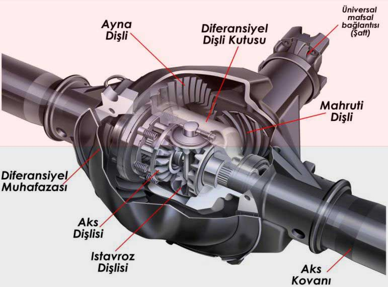

Araçlarda diferansiyel nedir? ne işe yarar? Araçların dönüşü esnasında devreye giren diferansiyel, araçların virajlarda devrilmesini engelleyerek daha güvenli bir sürüş sağlar. Bir aracın olmazsa olmaz parçalarından biri olan diferansiyeller hakkında biraz detaylı bilgi verelim.
Öğrencilik zamanınızda yürüyüş yaptığınız törenleri hatırlayın. Tören yürüyüşünde dönüş yapılacağı zaman içteki öğrenciler daha yavaş dönerken dıştaki öğrenciler daha hızlı dönerdi. Bir araç viraja girdiğinde aynı öğrencilerin dönüşü gibi dönülen tarafa yakın olan taraftaki tekerin yavaş dönmesi, uzak olan tekerin de hızlı dönmesi gerekmektedir.
Motordan çıkan hareket baskı balatası yardımı ile vites kutusuna oradan da bir şaft yardımı ile diferansiyele iletilir. Diferansiyele gelen hareket akslar vasıtası ile tekerlere iletilir. Ancak dönüş esnasında her iki tekerin aynı hızda dönmesi; dönüş yönüne göre dıştaki tekerin kayarak ilerlemesine, içteki tekere de fazla yük binmesine neden olacaktır. Diferansiyel tekerleri farklı hızlarda döndürerek aracın kaymasını ve savrulmasını önler.
Özetle araç viraja girdiğinde tekerlerin farklı hızlarda dönmesini sağlayan, dönüş hızlarını ayarlayan parçaya diferansiyel denir.

Diferansiyel, önden çekişli araçlarda aracın ön kısmında şanzıman kutusunda, arkadan çekişli araçlarda ise arka aksın ortasında bulunur. 4X4 diye tabir ettiğimiz araçlarda ise aracın ön kısmında, arka kısmında ve aktarma şaftından olmak üzere toplam 3 diferansiyel bulunur.
Açık diferansiyel de denilen klasik diferansiyel, motordan gelen dönme hareketini her iki tekere eşit kuvvette farklı hızlarda gönderir. Binek oto diye tabir ettiğimiz otomobillerin büyük bir kısmında bu diferansiyel bulunur. Tekerlerden biri patinaja düşüp çekişten düştüğünde diğer teker de bundan etkilenir.
Klasik diferansiyel her iki tekerin farklı hızlarda dönmesini sağlamasına karşın, kilitli diferansiyel bunun tam tersini yapar. Yani her iki tekeri de aynı hızda döndürür. Tekerlerden biri zor döneceği bir zemine girerse yada patinaja düşerse kilitli diferansiyel devreye girerek her iki tekeri de aynı hızda döndürür ve aracın patinajdan kurtulmasını sağlar.
Kilitli diferansiyel ile diferansiyel kilidi sık sık birbiri ile karıştırılır. Diferansiyel kilidi daha çok 4X4 araçlarda görülen ve 4 tekeri aynı anda kilitleyerek her türlü zeminde rahat sürüş imkanı sağlayan bir sistemdir.
Tekerler arasındaki dönüş farkı belirli bir oranı geçtiği zaman devreye girerek aks millerini birbirine kitleyen çeşidine sınırlı kaymalı diferansiyel denir. Daha çok üst segment araçlarda görülen ve aracın kaymasına daha hassas bir şekilde müdahale eden diferansiyel sistemine ise elektrik kontrollü sınırlı kaymalı diferansiyel denir.
4 tekere de giden torku (dönme kuvvetini) ayrı ayrı kontrol eder ve ihtiyaca göre dağıtan diferansiyel çeşididir. Klasik diferansiyele oranla yakıt tüketimi biraz daha fazladır.
Dişli çarklardan oluşan bir sistem olan diferansiyel, aracımızın olmazsa olmaz parçalarından biridir ve sorunsuz çalışabilmesi için yağlanması çok önemlidir. Eğer daha önce hiç diferansiyel yağ değişimi yaptırmamışsanız mutlaka yetkili servisinize giderek diferansiyel yağ seviyenizi kontrol ettirin, gerekiyorsa yağ değişimi yaptırın.